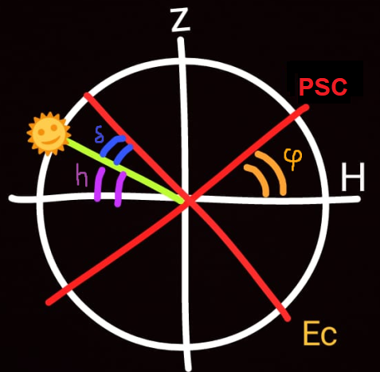

Introducción
El objetivo del trabajo práctico consiste en encontrar la latitud del lugar valiéndonos de algunas relaciones angulares sobre la esfera celeste, del Sol y un gnomon designado a dar sombra durante el día.
Debido a la rotación de la Tierra sobre su propio eje, en sentido oeste-este, la esfera celeste aparenta arrastrar consigo los astros en el sentido contrario. Este efecto se conoce como movimiento aparente del Sol. Si el eje del mundo no coincide con la vertical del lugar, es decir, si el observador no se encuentra en los polos, las estrellas parecen girar "inclinadas". Por tanto, para todo observador no ubicado en los polos terrestres, todo objeto cambiará su altura a lo largo del día.
Para realizar las relaciones angulares, utilizaremos dos distintos sistemas de coordenadas: el sistema de coordenadas acimutal y el sistema de coordenadas ecuatorial.
En el sistema de coordenadas acimutal, vamos a ubicar el plano del horizonte (división "natural" del cielo por la línea del horizonte que está contenida en un plano), la vertical del lugar (la recta perpendicular al plano del horizonte que contiene al observador), y el cenit y el nadir (intersecciones de la vertical de lugar con la esfera celeste). Utilizaremos la coordenada de la altura (h) que consiste en el ángulo entre la estrella en cuestión y el horizonte.
En el sistema de coordenadas ecuatorial, situaremos el eje del mundo y las intersecciones de éste con la esfera celeste (los polos celestes), el ecuador celeste (plano que contiene al observador y es perpendicular al eje del mundo), y el meridiano de lugar que contiene a los dos polos celestes, al cenit y al nadir. El meridiano de lugar resulta fundamental para los fines del trabajo práctico porque, además de que el movimiento aparente diurno de las estrellas resulta simétrico a él, las estrellas alcanzan su mayor y menor altura sobre el horizonte donde su trayectoria interseca con el meridiano de lugar, es decir donde culminan.
Los ángulos que vamos a utilizar están en el plano del meridiano del lugar. Primero, la altura (h) del astro que nos ayudará a conocer nuestra latitud de lugar, o sea el Sol, se corresponde con el ángulo entre el astro y su proyección sobre el horizonte. La declinación del sol (δ) es la proyección del paralelo celeste que contiene al astro y el ecuador celeste. La latitud del lugar (Φ) que consiste en la altura del polo elevado, ya que es el ángulo entre el horizonte y el eje del mundo.

Ahora que tenemos los ángulos que utilizaremos en el plano de lugar, explicaremos cuál es la función del gnomon y qué información nos brinda. El objeto que escogimos tendrá como objetivo proyectar su sombra de la cual nosotros registramos su largo durante el día.
En nuestras mediciones, la más importante es el momento en donde la sombra es más pequeña, ya que esto significa que el Sol está en su máxima altura y por lo tanto culminando superiormente.
Pensamos en un triángulo rectángulo. Uno de los catetos consiste en la altura del gnomon y el otro en el largo de la sombra de éste. La hipotenusa consiste en una línea imaginaria que conecta al Sol con el último punto de la sombra del gnomon. El ángulo entre la hipotenusa y el cateto sombra nos dará la altura del Sol sobre el horizonte, el cual calculamos mediante su tangente, que sería el cociente entre la altura del gnomon y la longitud de su sombra.
De esta forma, conociendo la altura del Sol sobre el horizonte y con la ayuda de algunas relaciones entre ángulos, seremos capaces de calcular la latitud del lugar.